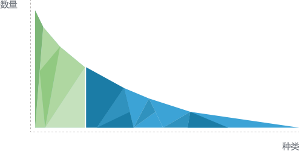

创客运动激发了普通大众的创造潜能。在互联网的推动下，开源和在线创造将获得更快更大范围拓展，加之技术创造的门槛业已降低，普通大众进行技术创造更为简单，这将会激发深植在人类本性之中的创造欲望。随着”人人都可以成为创客”理念深入人心，人类的创造潜能必然迎来充分释放的机会。设计和制造新产品不再是少数人的权利，普通大众也能够参与技术变革，创客运动将成为社会创造和创新的新力量。
目前的产业创新模式无法有效的支持人人创客，产业还是针对短头的红海模式。“创客大爆炸”将致力于搭建一个“人人创客，万众创新”的开放创新产业链。

主体
长尾